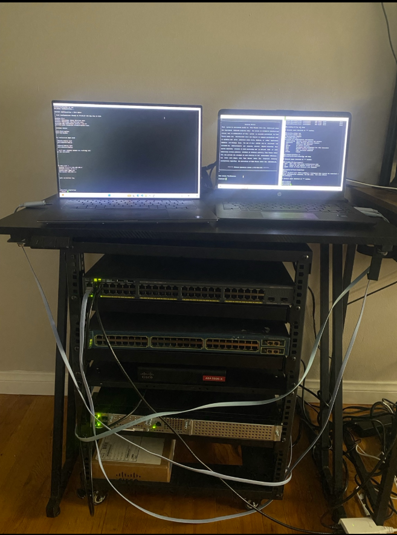
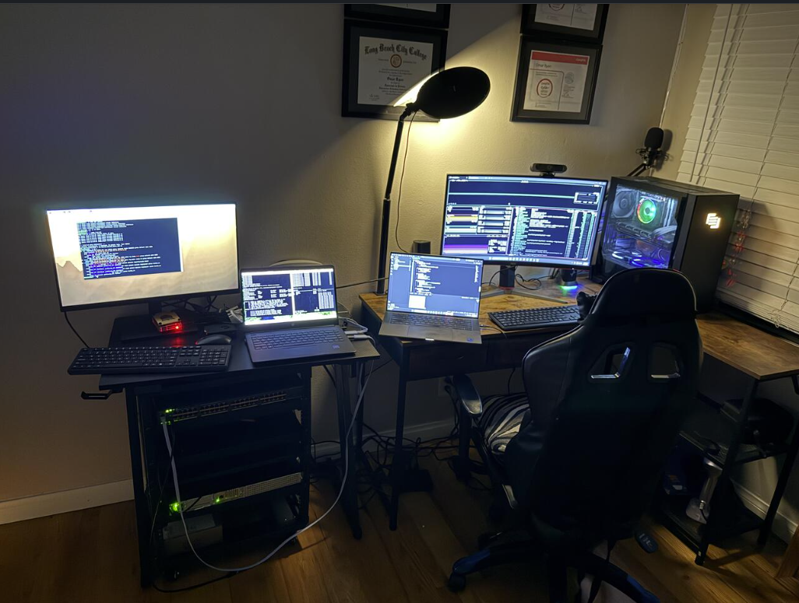

A physical, self-racked Cisco network with a layered network-security-monitoring pipeline built on top: SPAN-mirrored traffic feeding Security Onion (Suricata + Zeek), correlated in Splunk Enterprise. Every device — router, firewall, both switches — is real hardware, not virtualized.
Three paths run over the same physical gear: production traffic, a passive visibility tap, and device management logging.
Production path
Visibility path — a SPAN port on the 2960X mirrors a one-way copy of traffic to the monitoring sensor. That interface carries no IP and isn't used for management, deliberately, since mixing that role with general device access would widen the sensor's own attack surface.
Management path — all four Cisco devices forward syslog directly to Splunk as its own event category, separate from NSM telemetry.
"Suricata tells you something matched a rule; Zeek tells you what actually happened; syslog tells you what the infrastructure itself did; Splunk is where all three get correlated into one investigation."

